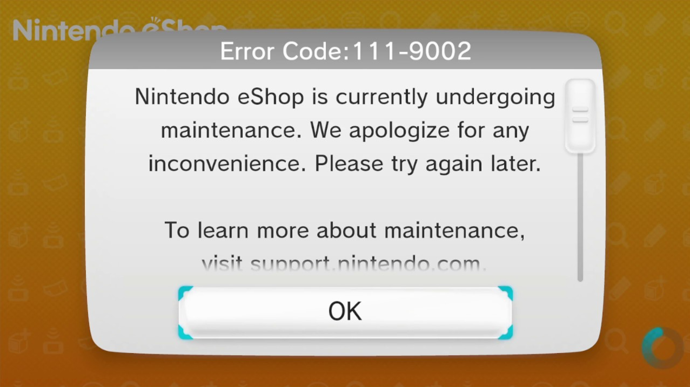

<body onload="startcursor()">
<!-- Original Wii U eShop was on a gamepad, no right click menu really existed, so this removes that said menu.-->
<script>
    document.oncontextmenu = document.body.oncontextmenu = function() {return false;}
  </script>
  <!-- Original Wii U eShop was on a gamepad, no right click menu really existed, so this removes that said menu.-->
  
  
  <!--  PUT THIS ELEMENT ON TOP OF YOUR HTML CODE SO IT DOESN'T GET IN THE WAY OF ANYTHING.)-->
      <!-- Loading image stuff start (do the load() function on something so it shows while loading another page.)-->
      <div class="containermg">
        <div id="imgloadr" class="card-header">
            
         </div>
        </div>
         
        <!-- LOADER IMG for the load() function on something so it shows while loading another page, 
            CHANGE THE IMAGE TO YOUR LIKING) !-->
        
            <!-- Loading image script and css start (do the load() function on something so it shows while loading another page.)-->
        <script>
            function load() {
                $('#imgforshow').fadeTo(200, 0.9); // Fade to 50% opacity over 1 second
                var audio = new Audio('sfx/Wii U - Loading.mp3');
  audio.play();
            }
  
        </script>
        <!-- Loading image css start -->
        
        <style>
  .ldrrIMAFE {
    max-width:220px; max-height:90px;
    left:385px;
    top:205px;
    position:absolute;
  }
  
  
            /* Loader img properties */
        .loaderthatshows {
           float:left;
           margin:0;
           top:0;
           position:sticky;
           border-radius:20px;
           opacity:0%;
           /* Change depending on image */
           max-width:60px;
        
           /* Change depending on image */
        }
        /* Loader img properties */
        
        
        /* Loader img holder (DONT CHANGE UNLESS U KNOW WHAT YOUR DOING) */
        .containermg {
            position: absolute;
            left:2.1%;
            top:1.5%;
            opacity:70%;
        }
    
        /* Loader img holder (DONT CHANGE UNLESS U KNOW WHAT YOUR DOING) */
        
        </style>
        <!-- Loading image css end -->
        
        
            <!--  PUT THIS ELEMENT ON TOP OF YOUR HTML CODE SO IT DOESN'T GET IN THE WAY OF ANYTHING.)-->
        
            <!-- Loading image stuff end (do the load() function on something so it shows while loading another page.)-->
      
            


<head>
    <link rel="icon" type="image/x-icon" href="eshop_bag.png">
    <title>eShop recreation - Maintenance</title>
</head>
<link rel="icon" type="image/x-icon" href="eshop_bag.png">

<iframe src="sfx/Wii U Error.ogg" type="audio/mp3" allow="autoplay" allow="loop"  id="audio" style="display:none"></iframe>
<center>
    <a href="fadeawy-mant.html">
    
</a>
      </center>
<style>
body {
    background-image:url(eshop_maintance.PNG);
    background-repeat:no-repeat;
background-size:705px;
background-repeat:no-repeat;
size:1050px;
}
img {
float:left;
width: 690px;
}
</style>
<link rel="stylesheet" href="eshop.css">


<script>
    function hover() {
      var audio = new Audio('sfx/Wii U - Hover.mp3');
  audio.play();
    }
    </script>
  
  
  <script>
    function back() {
      var audio = new Audio('sfx/Wii U - Back.wav');
  audio.play();
    }
    </script>
  
  <script>
    function clicksound() {
      var audio = new Audio('sfx/Wii U - Long Click.mp3');
  audio.play();
    }
    </script>


  <!-- Original Wii U eShop was on a gamepad, no right click menu really existed, so this removes that said menu.-->
  <script>
    document.oncontextmenu = document.body.oncontextmenu = function() {return false;}
  </script>
  <!-- Original Wii U eShop was on a gamepad, no right click menu really existed, so this removes that said menu.-->
  <style>
    /* THIS PREVENTS THE IMAGE FROM BUGGING OUT WHILE INTERACTING 1 */
    img {
      user-drag: none;
    -webkit-user-drag: none;
    user-select: none;
    -moz-user-select: none;
    -webkit-user-select: none;
    -ms-user-select: none;
    }
    </style>

    
<div class="custom-cursor">
    
      <!-- Follow Your mouse pointer code (Credit to https://codepen.io/mfritsch on codepen.io for the original JS and css code. 
    this is just modified to work with images.)
    -->
      </div>
  
      <Style>
          .custom-cursor {
      /*  Follow Your mouse pointer CSS (Credit to https://codepen.io/mfritsch on codepen.io for the original JS and css code.
       this is just modified to work with images.  */
    
      position: fixed;
      top: 0;
      left: 0;
      pointer-events: none;
      z-index: 99999;
      transform: translate3d(var(--x, -150px), var(--y, -150px), 0);
    }
    .custom-cursor img {
  max-width:90px;
    }
      </Style>
  
      <script>
        // Follow Your mouse pointer JS (Credit to https://codepen.io/mfritsch on codepen.io for the original JS and css code. 
  // this is just modified to work with images.)
  function startcursor() {
  $(document).on("mousemove", function(e) {
      $(".custom-cursor").attr('style', '--y:' + e.clientY + 'px; --x:' + e.clientX +'px' )
  });
  }
      </script>
  </body>